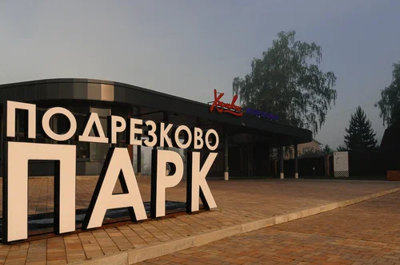
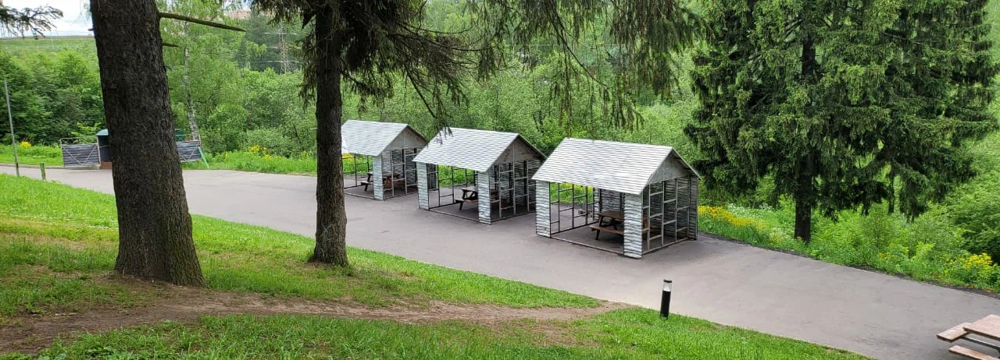
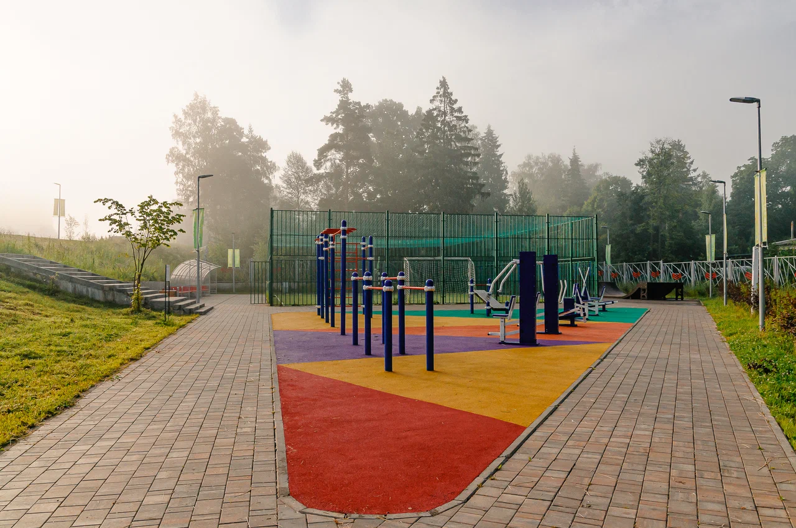
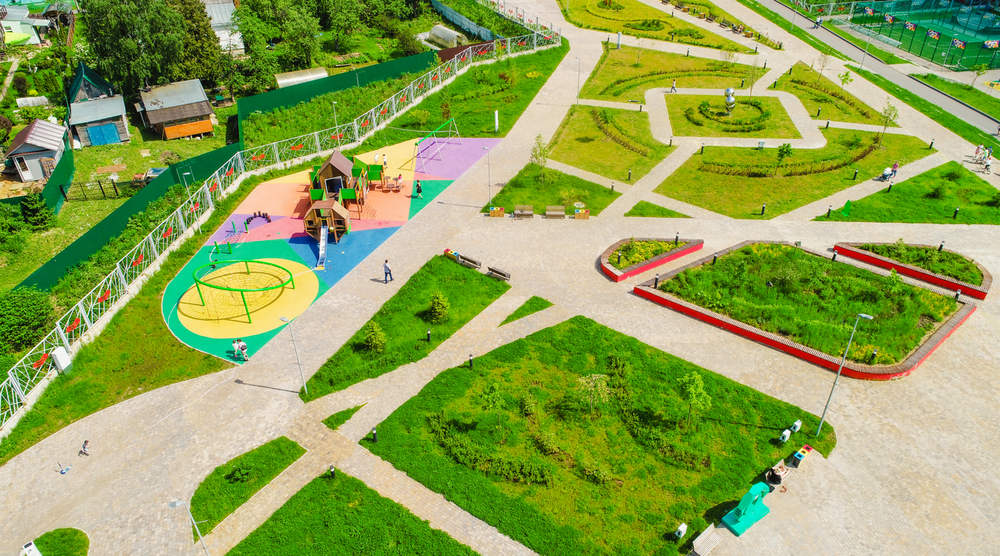
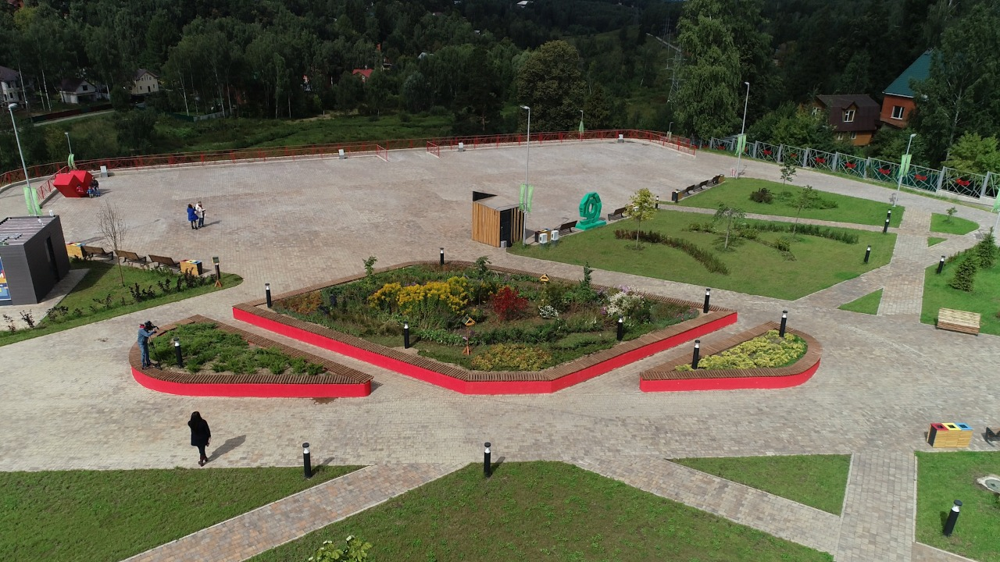
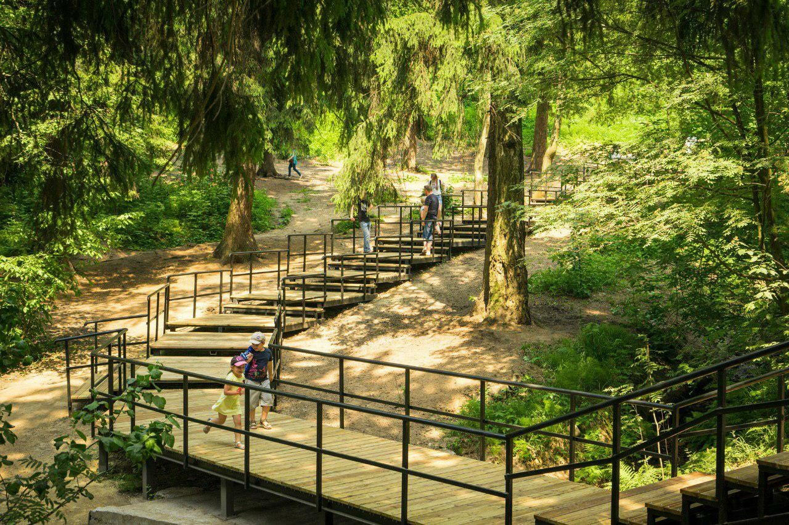
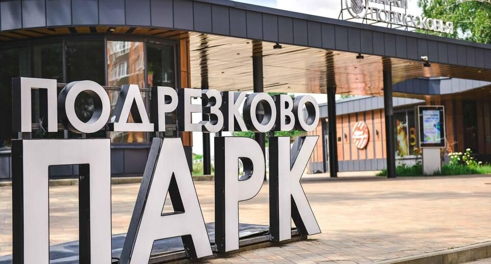
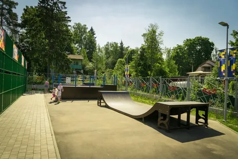
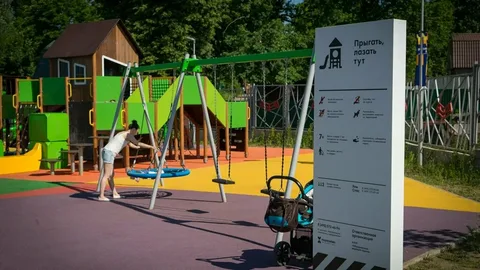

Парк Подрезково

Парк Подрезково - отличное место, чтобы прогуляться, посидеть на лавочках и отдохнуть, полюбоваться видом на смотровой площадке и просто хорошо провести время.
Так же в нашем Парке есть

Зона для пикника, где можно пожарить шашлык, провести день рождение или просто собраться хорошей компанией.

Спортивная площадка, которая включает в себя: поле для мини футбола на исскуственном газоне, тренажёры с турниками и брусьями, и трамплины для катания на скейтбордах, трюковых самокатах и велосипедах.

Детская площадка, куда вы можете привести своих детей, которые с удовольствием будут там играть, а вы в это время можете отдохнуть на скамейках.

Смотровая площадка, где вы можете пофотограффироваться и насладиться видом, особенно если в этот момент будет закат.

Парк находиться как и под открытым небом, так и в лесу. Вдоль хвойного леса проложенна дорожка, по которой можно прогуливаться и наслаждаться красотой природы.




Парк Подрезково